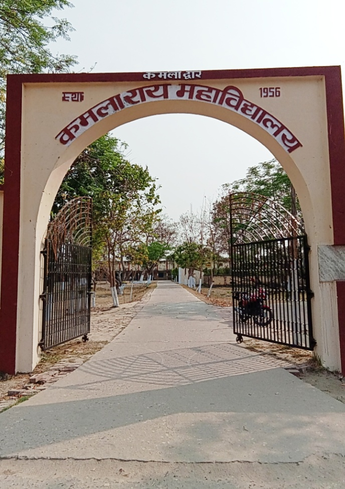
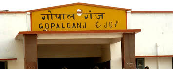

Gopalganj
Main Markets
Purani Bazaar - Gopalganj
Purani Bazaar is one of the oldest and busiest marketplaces in Gopalganj city. Known for its traditional shops and narrow lanes, it offers everything from groceries and clothing to household items at affordable prices. The market stays lively throughout the day, attracting both locals and visitors for daily needs and small-town shopping charm.
Thawe Road Market - Gopalganj
Thawe Road Market is a popular commercial hub located on the way to the famous Thawe Temple. The market is known for its shops, eateries, and daily-use items, making it a convenient stop for both locals and devotees traveling towards the temple. It reflects a blend of religious significance and local trade activity.

Station Road Market, Gopalganj:
Station Road Market is one of the busiest areas of Gopalganj, located near the railway station. The market is filled with shops, hotels, and street vendors, serving both daily commuters and travelers. Known for its hustle and bustle, it is a go-to spot for essentials, food, and quick shopping before or after a journey..

🎓 Educational Hub
Kamla Rai College, Gopalganj
Kamla Rai College is one of the leading educational institutions in Gopalganj, affiliated with Jai Prakash University, Chapra. Established to promote higher education in the region, the college offers undergraduate and postgraduate courses in arts, science, and commerce. it has become an important center for students seeking quality education in the district.

Mahendra Mahila College
Mahendra Mahila College is a prominent women’s college in Gopalganj, affiliated with Jai Prakash University, Chapra.
Dedicated to empowering women through education, the college offers undergraduate courses in arts and other disciplines.
It plays a vital role in promoting higher education among women in the region, encouraging academic excellence and social development

Railway and Transport Connectivity
Gopalganj
Gopalganj Railway Station is a key railhead in the district, connecting the city to nearby towns and major destinations of Bihar and Uttar Pradesh. Serving as an important transit point for passengers, the station is surrounded by busy markets, hotels, and eateries, reflecting the daily hustle of travelers and locals alike..

Gopalganj bus Stand
Gopalganj Bus Stand is a major transportation hub in the district, connecting Gopalganj to various cities and towns across Bihar and neighboring states. The bus stand is always bustling with activity, serving as a vital link for daily commuters, students, and travelers. It features numerous bus services, eateries, and shops catering to the needs of passengers.

infrastructure
Minz Stadium, Gopalganj
Minz Stadium is a major sports venue in Gopalganj, hosting local and regional sporting events, including football, cricket, and athletics. The stadium serves as a hub for youth activities and community gatherings, promoting sports and recreational engagement in the city.

Sadar Hospital,Gopalganj
Sadar Hospital is the main healthcare facility in Gopalganj, providing essential medical services to the local population. Equipped with various departments and specialists, it plays a crucial role in delivering healthcare and emergency services. The hospital is a lifeline for residents, especially in times of medical emergencies.

Gopalganj District Court
The Gopalganj District Court is the main judicial body in the district, handling civil and criminal cases. It plays a vital role in upholding justice and legal proceedings in the region, serving as a center for legal affairs and public hearings.

Sabya Airport, Gopalganj
Sabya Airport is a small regional airstrip serving Gopalganj and nearby areas. While primarily used for private and chartered flights, it plays a role in connecting the district to other parts of Bihar and supporting local travel and business activities. currenty work on progress